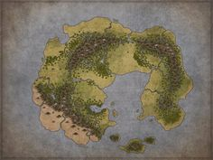

World Bible
Home
Characters
Locations
Creatures
Lore
Create
Name
Occupation
Sex
Bio
He discretely worships Torm, God of duty, loyalty, obedience, paladins. (Lawful Good) He is always very calm. He has no self-confidence. He sleeps fully dressed, ready to run. He collects weird bones.
Quests
Excuse me, champion. Please, lend me your hand. My family is coming over in 2 days and I want to make them my secret recipe pie, unfortunately I need a few more ingredients to make it. I need you to get me some flour, a couple of eggs, some spider legs, half a dozen beetle husks and a cup of sugar. Oh this cake is going to be amazing! You can have a piece if you'd like. I wish I could pay you far more than I can, but what I can pay isn't less than what's fair either.